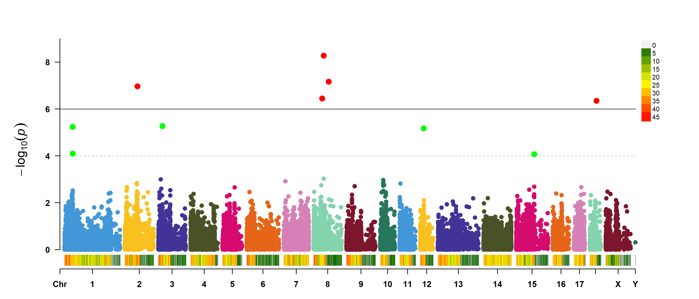
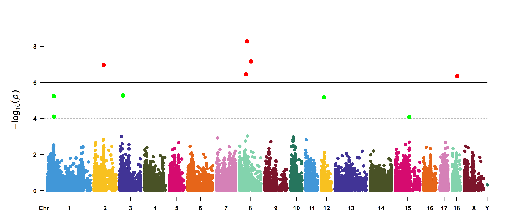
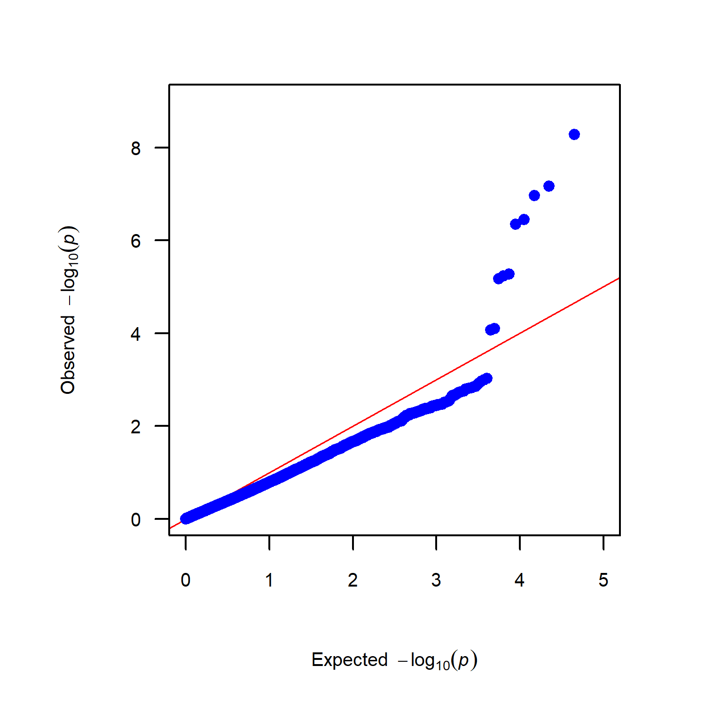

<!DOCTYPE html>


<html lang="zh-CN">


<head>
  <meta name="baidu-site-verification" content="codeva-NSg7ynviLa" />
  <meta charset="utf-8" />
    
  <meta name="viewport" content="width=device-width, initial-scale=1, maximum-scale=1" />
  <title>
    R包-cMplot |  
  </title>
  <meta name="generator" content="hexo-theme-ayer">
  
  <link rel="shortcut icon" href="/images/mojie.jpg" />
  
  
<link rel="stylesheet" href="/dist/main.css">

  <link rel="stylesheet" href="https://cdn.jsdelivr.net/gh/Shen-Yu/cdn/css/remixicon.min.css">
  
<link rel="stylesheet" href="/css/custom.css">

  
  <script src="https://cdn.jsdelivr.net/npm/pace-js@1.0.2/pace.min.js"></script>
  
  

  

<link rel="alternate" href="/atom.xml" title="null" type="application/atom+xml">
</head>

</html>

<body>
  <div id="app">
    
      
    <main class="content on">
      <section class="outer">
  <article
  id="post-R包-cMplot"
  class="article article-type-post"
  itemscope
  itemprop="blogPost"
  data-scroll-reveal
>
  <div class="article-inner">
    
    <header class="article-header">
       
<h1 class="article-title sea-center" style="border-left:0" itemprop="name">
  R包-cMplot
</h1>
 

    </header>
     
    <div class="article-meta">
      <a href="/posts/1eb2821c/" class="article-date">
  <time datetime="2026-06-12T05:42:04.000Z" itemprop="datePublished">2026-06-12</time>
</a>   
<div class="word_count">
    <span class="post-time">
        <span class="post-meta-item-icon">
            <i class="ri-quill-pen-line"></i>
            <span class="post-meta-item-text"> 字数统计:</span>
            <span class="post-count">1.6k</span>
        </span>
    </span>

    <span class="post-time">
        &nbsp; | &nbsp;
        <span class="post-meta-item-icon">
            <i class="ri-book-open-line"></i>
            <span class="post-meta-item-text"> 阅读时长≈</span>
            <span class="post-count">6 分钟</span>
        </span>
    </span>
</div>
 
    </div>
      
    <div class="tocbot"></div>


  
    <div class="article-entry" itemprop="articleBody">
       
  <link rel="stylesheet" type="text/css" href="https://cdn.jsdelivr.net/hint.css/2.4.1/hint.min.css"><p>用来绘制曼哈顿图和QQ图。除了正常的曼哈顿图，还可以画环形的曼哈顿图。</p>
<span id="more"></span>
<p><a target="_blank" rel="noopener" href="https://github.com/YinLiLin/CMplot">github官网</a></p>
<h1>1. 安装与加载</h1>
<p><code>CMplot</code>是一个成熟的 R 语言包，可以直接通过 CRAN 安装：</p>
<figure class="highlight plaintext"><table><tr><td class="gutter"><pre><span class="line">1</span><br><span class="line">2</span><br><span class="line">3</span><br><span class="line">4</span><br></pre></td><td class="code"><pre><span class="line"># 安装</span><br><span class="line">install.packages(&quot;CMplot&quot;)</span><br><span class="line"># 加载</span><br><span class="line">library(CMplot)</span><br></pre></td></tr></table></figure>
<h1>2. 准备数据</h1>
<p><code>CMplot</code>对输入数据格式有明确要求，通常是一个数据框（dataframe）：</p>
<ul>
<li><strong>第 1 列</strong>：SNP 名称（如 rs 编号）。</li>
<li><strong>第 2 列</strong>：染色体编号（Chromosome，支持数字或 X/Y）。</li>
<li><strong>第 3 列</strong>：SNP 物理位置（Position）。</li>
<li><strong>后续列</strong>：对应的 P 值（可以是单性状或多性状）。</li>
</ul>
<p>包内自带了示例数据集 <code>pig60K</code>和 <code>cattle50K</code>，你可以直接加载查看格式：</p>
<figure class="highlight plaintext"><table><tr><td class="gutter"><pre><span class="line">1</span><br><span class="line">2</span><br></pre></td><td class="code"><pre><span class="line">data(pig60K)</span><br><span class="line">head(pig60K)</span><br></pre></td></tr></table></figure>
<h1>3. 绘制曼哈顿图 (Manhattan Plot)</h1>
<h2 id="双阈值-存在SNP密度图">双阈值_存在SNP密度图</h2>
<p>通过设置 <code>plot.type=&quot;m&quot;</code>来绘制常规的曼哈顿图。常用参数包括设置阈值线、颜色等。</p>
<figure class="highlight r"><table><tr><td class="gutter"><pre><span class="line">1</span><br><span class="line">2</span><br><span class="line">3</span><br><span class="line">4</span><br><span class="line">5</span><br><span class="line">6</span><br><span class="line">7</span><br><span class="line">8</span><br><span class="line">9</span><br><span class="line">10</span><br><span class="line">11</span><br><span class="line">12</span><br><span class="line">13</span><br><span class="line">14</span><br><span class="line">15</span><br><span class="line">16</span><br><span class="line">17</span><br><span class="line">18</span><br><span class="line">19</span><br><span class="line">20</span><br><span class="line">21</span><br><span class="line">22</span><br><span class="line">23</span><br></pre></td><td class="code"><pre><span class="line">CMplot<span class="punctuation">(</span></span><br><span class="line">  pig60K<span class="punctuation">[</span><span class="punctuation">,</span> <span class="number">1</span><span class="operator">:</span><span class="number">4</span><span class="punctuation">]</span><span class="punctuation">,</span>  <span class="comment"># 输入数据：数据框，第1列SNP名，第2列染色体，第3列物理位置，第4列P值</span></span><br><span class="line">  plot.type <span class="operator">=</span> <span class="string">&quot;m&quot;</span><span class="punctuation">,</span> <span class="comment"># 绘图类型：&quot;m&quot; 表示 Manhattan plot（曼哈顿图）</span></span><br><span class="line">  LOG10 <span class="operator">=</span> <span class="literal">TRUE</span><span class="punctuation">,</span>    <span class="comment"># 是否将 P 值转换为 -log10(P) 尺度：TRUE 表示转换</span></span><br><span class="line">  ylim <span class="operator">=</span> <span class="literal">NULL</span><span class="punctuation">,</span>     <span class="comment"># Y轴范围：NULL 表示根据数据自动适应，也可设为 c(min, max)</span></span><br><span class="line">  threshold <span class="operator">=</span> <span class="built_in">c</span><span class="punctuation">(</span><span class="number">1e-6</span><span class="punctuation">,</span> <span class="number">1e-4</span><span class="punctuation">)</span><span class="punctuation">,</span> <span class="comment"># 显著性阈值：可设置多个阈值线（如全基因组显著和 suggestive 阈值）</span></span><br><span class="line">  threshold.lty <span class="operator">=</span> <span class="built_in">c</span><span class="punctuation">(</span><span class="number">1</span><span class="punctuation">,</span> <span class="number">2</span><span class="punctuation">)</span><span class="punctuation">,</span>   <span class="comment"># 阈值线类型：1=实线，2=虚线</span></span><br><span class="line">  threshold.lwd <span class="operator">=</span> <span class="built_in">c</span><span class="punctuation">(</span><span class="number">1</span><span class="punctuation">,</span> <span class="number">1</span><span class="punctuation">)</span><span class="punctuation">,</span>   <span class="comment"># 阈值线宽度：控制线条粗细</span></span><br><span class="line">  threshold.col <span class="operator">=</span> <span class="built_in">c</span><span class="punctuation">(</span><span class="string">&quot;black&quot;</span><span class="punctuation">,</span> <span class="string">&quot;grey&quot;</span><span class="punctuation">)</span><span class="punctuation">,</span> <span class="comment"># 阈值线颜色</span></span><br><span class="line">  amplify <span class="operator">=</span> <span class="literal">TRUE</span><span class="punctuation">,</span>    <span class="comment"># 是否放大显著点：TRUE 表示大于最小显著性水平的点会被放大</span></span><br><span class="line">  bin.size <span class="operator">=</span> <span class="number">1e6</span><span class="punctuation">,</span>    <span class="comment"># 窗口大小（bp）：用于计算 SNP 密度的窗口大小（1 Mb）</span></span><br><span class="line">  chr.den.col <span class="operator">=</span> <span class="built_in">c</span><span class="punctuation">(</span><span class="string">&quot;darkgreen&quot;</span><span class="punctuation">,</span> <span class="string">&quot;yellow&quot;</span><span class="punctuation">,</span> <span class="string">&quot;red&quot;</span><span class="punctuation">)</span><span class="punctuation">,</span> <span class="comment"># 染色体密度颜色：从低密度到高密度的渐变色</span></span><br><span class="line">  signal.col <span class="operator">=</span> <span class="built_in">c</span><span class="punctuation">(</span><span class="string">&quot;red&quot;</span><span class="punctuation">,</span> <span class="string">&quot;green&quot;</span><span class="punctuation">)</span><span class="punctuation">,</span> <span class="comment"># 显著点颜色：分别对应不同阈值线上的显著点颜色</span></span><br><span class="line">  signal.cex <span class="operator">=</span> <span class="built_in">c</span><span class="punctuation">(</span><span class="number">1.5</span><span class="punctuation">,</span> <span class="number">1.5</span><span class="punctuation">)</span><span class="punctuation">,</span>     <span class="comment"># 显著点大小：放大后的点尺寸</span></span><br><span class="line">  signal.pch <span class="operator">=</span> <span class="built_in">c</span><span class="punctuation">(</span><span class="number">19</span><span class="punctuation">,</span> <span class="number">19</span><span class="punctuation">)</span><span class="punctuation">,</span>        <span class="comment"># 显著点形状：19 表示实心圆点</span></span><br><span class="line">  file <span class="operator">=</span> <span class="string">&quot;png&quot;</span><span class="punctuation">,</span>      <span class="comment"># 输出文件格式：可选 &quot;jpg&quot;, &quot;pdf&quot;, &quot;tiff&quot;, &quot;png&quot;</span></span><br><span class="line">  file.name <span class="operator">=</span> <span class="string">&quot;manhattan&quot;</span><span class="punctuation">,</span> <span class="comment"># 输出文件名：结合 plot.type 生成最终文件名；多个性状则提供多个名称</span></span><br><span class="line">  dpi <span class="operator">=</span> <span class="number">300</span><span class="punctuation">,</span>         <span class="comment"># 图片分辨率：适用于 jpg, tiff, png 格式</span></span><br><span class="line">  file.output <span class="operator">=</span> <span class="literal">TRUE</span><span class="punctuation">,</span><span class="comment"># 是否输出文件：TRUE 表示保存图片到本地</span></span><br><span class="line">  verbose <span class="operator">=</span> <span class="literal">TRUE</span><span class="punctuation">,</span>    <span class="comment"># 是否打印运行日志信息</span></span><br><span class="line">  width <span class="operator">=</span> <span class="number">14</span><span class="punctuation">,</span>        <span class="comment"># 输出图片的宽度（英寸）</span></span><br><span class="line">  height <span class="operator">=</span> <span class="number">6</span>         <span class="comment"># 输出图片的高度（英寸）</span></span><br><span class="line"><span class="punctuation">)</span></span><br></pre></td></tr></table></figure>
<p>输出结果为 Rect_Manhtn.manhattan.png ，设定的 <code>file.name</code> 其实是文件名的主体，如下图。图中下面是SNP密度（默认是计算1MB的位点数目），右上的图标就是密度的颜色渐变指示。</p>
<p></p>
<h2 id="双阈值-无密度条图">双阈值-无密度条图</h2>
<p>在 <code>CMplot</code>中，<strong>SNP 密度图是由 chr.den.col控制的</strong>。</p>
<p>只要 <strong>不设置 chr.den.col，并把 bin.size去掉</strong>，就不会画密度条。</p>
<figure class="highlight r"><table><tr><td class="gutter"><pre><span class="line">1</span><br><span class="line">2</span><br><span class="line">3</span><br><span class="line">4</span><br><span class="line">5</span><br><span class="line">6</span><br><span class="line">7</span><br><span class="line">8</span><br><span class="line">9</span><br><span class="line">10</span><br><span class="line">11</span><br><span class="line">12</span><br><span class="line">13</span><br><span class="line">14</span><br><span class="line">15</span><br><span class="line">16</span><br><span class="line">17</span><br><span class="line">18</span><br><span class="line">19</span><br><span class="line">20</span><br><span class="line">21</span><br></pre></td><td class="code"><pre><span class="line">CMplot<span class="punctuation">(</span></span><br><span class="line">  pig60K<span class="punctuation">[</span><span class="punctuation">,</span> <span class="number">1</span><span class="operator">:</span><span class="number">4</span><span class="punctuation">]</span><span class="punctuation">,</span></span><br><span class="line">  plot.type <span class="operator">=</span> <span class="string">&quot;m&quot;</span><span class="punctuation">,</span></span><br><span class="line">  LOG10 <span class="operator">=</span> <span class="literal">TRUE</span><span class="punctuation">,</span></span><br><span class="line">  ylim <span class="operator">=</span> <span class="literal">NULL</span><span class="punctuation">,</span></span><br><span class="line">  threshold <span class="operator">=</span> <span class="built_in">c</span><span class="punctuation">(</span><span class="number">1e-6</span><span class="punctuation">,</span> <span class="number">1e-4</span><span class="punctuation">)</span><span class="punctuation">,</span></span><br><span class="line">  threshold.lty <span class="operator">=</span> <span class="built_in">c</span><span class="punctuation">(</span><span class="number">1</span><span class="punctuation">,</span> <span class="number">2</span><span class="punctuation">)</span><span class="punctuation">,</span></span><br><span class="line">  threshold.lwd <span class="operator">=</span> <span class="built_in">c</span><span class="punctuation">(</span><span class="number">1</span><span class="punctuation">,</span> <span class="number">1</span><span class="punctuation">)</span><span class="punctuation">,</span></span><br><span class="line">  threshold.col <span class="operator">=</span> <span class="built_in">c</span><span class="punctuation">(</span><span class="string">&quot;black&quot;</span><span class="punctuation">,</span> <span class="string">&quot;grey&quot;</span><span class="punctuation">)</span><span class="punctuation">,</span></span><br><span class="line">  amplify <span class="operator">=</span> <span class="literal">TRUE</span><span class="punctuation">,</span></span><br><span class="line">  signal.col <span class="operator">=</span> <span class="built_in">c</span><span class="punctuation">(</span><span class="string">&quot;red&quot;</span><span class="punctuation">,</span> <span class="string">&quot;green&quot;</span><span class="punctuation">)</span><span class="punctuation">,</span></span><br><span class="line">  signal.cex <span class="operator">=</span> <span class="built_in">c</span><span class="punctuation">(</span><span class="number">1.5</span><span class="punctuation">,</span> <span class="number">1.5</span><span class="punctuation">)</span><span class="punctuation">,</span></span><br><span class="line">  signal.pch <span class="operator">=</span> <span class="built_in">c</span><span class="punctuation">(</span><span class="number">19</span><span class="punctuation">,</span> <span class="number">19</span><span class="punctuation">)</span><span class="punctuation">,</span></span><br><span class="line">  file <span class="operator">=</span> <span class="string">&quot;png&quot;</span><span class="punctuation">,</span></span><br><span class="line">  file.name <span class="operator">=</span> <span class="string">&quot;manhattan&quot;</span><span class="punctuation">,</span></span><br><span class="line">  dpi <span class="operator">=</span> <span class="number">300</span><span class="punctuation">,</span></span><br><span class="line">  file.output <span class="operator">=</span> <span class="literal">TRUE</span><span class="punctuation">,</span></span><br><span class="line">  verbose <span class="operator">=</span> <span class="literal">TRUE</span><span class="punctuation">,</span></span><br><span class="line">  width <span class="operator">=</span> <span class="number">14</span><span class="punctuation">,</span></span><br><span class="line">  height <span class="operator">=</span> <span class="number">6</span></span><br><span class="line"><span class="punctuation">)</span></span><br></pre></td></tr></table></figure>
<p></p>
<h2 id="单阈值">单阈值</h2>
<figure class="highlight r"><table><tr><td class="gutter"><pre><span class="line">1</span><br><span class="line">2</span><br><span class="line">3</span><br><span class="line">4</span><br><span class="line">5</span><br><span class="line">6</span><br><span class="line">7</span><br><span class="line">8</span><br><span class="line">9</span><br><span class="line">10</span><br><span class="line">11</span><br><span class="line">12</span><br><span class="line">13</span><br><span class="line">14</span><br><span class="line">15</span><br><span class="line">16</span><br><span class="line">17</span><br><span class="line">18</span><br><span class="line">19</span><br><span class="line">20</span><br><span class="line">21</span><br></pre></td><td class="code"><pre><span class="line">CMplot<span class="punctuation">(</span></span><br><span class="line">  pig60K<span class="punctuation">[</span><span class="punctuation">,</span> <span class="number">1</span><span class="operator">:</span><span class="number">4</span><span class="punctuation">]</span><span class="punctuation">,</span>  <span class="comment"># 输入数据：数据框，第1列SNP名，第2列染色体，第3列物理位置，第4列P值</span></span><br><span class="line">  plot.type <span class="operator">=</span> <span class="string">&quot;m&quot;</span><span class="punctuation">,</span> <span class="comment"># 绘图类型：&quot;m&quot; 表示 Manhattan plot（曼哈顿图）</span></span><br><span class="line">  LOG10 <span class="operator">=</span> <span class="literal">TRUE</span><span class="punctuation">,</span>    <span class="comment"># 是否将 P 值转换为 -log10(P) 尺度：TRUE 表示转换</span></span><br><span class="line">  ylim <span class="operator">=</span> <span class="literal">NULL</span><span class="punctuation">,</span>     <span class="comment"># Y轴范围：NULL 表示根据数据自动适应，也可设为 c(min, max)</span></span><br><span class="line">  threshold <span class="operator">=</span> <span class="number">1e-6</span><span class="punctuation">,</span> <span class="comment"># 显著性阈值：设置全基因组显著性水平线（如 Bonferroni 校正后的值）</span></span><br><span class="line">  threshold.lty <span class="operator">=</span> <span class="number">1</span><span class="punctuation">,</span> <span class="comment"># 阈值线类型：1 表示实线（solid）</span></span><br><span class="line">  threshold.lwd <span class="operator">=</span> <span class="number">1</span><span class="punctuation">,</span> <span class="comment"># 阈值线宽度：控制线条粗细</span></span><br><span class="line">  threshold.col <span class="operator">=</span> <span class="string">&quot;black&quot;</span><span class="punctuation">,</span> <span class="comment"># 阈值线颜色：设置为黑色</span></span><br><span class="line">  amplify <span class="operator">=</span> <span class="literal">TRUE</span><span class="punctuation">,</span>    <span class="comment"># 是否放大显著点：TRUE 表示大于阈值线的点会被放大显示</span></span><br><span class="line">  signal.col <span class="operator">=</span> <span class="string">&quot;red&quot;</span><span class="punctuation">,</span> <span class="comment"># 显著点颜色：放大后的显著点显示为红色</span></span><br><span class="line">  signal.cex <span class="operator">=</span> <span class="number">1.5</span><span class="punctuation">,</span> <span class="comment"># 显著点大小：控制放大后点的尺寸</span></span><br><span class="line">  signal.pch <span class="operator">=</span> <span class="number">19</span><span class="punctuation">,</span>   <span class="comment"># 显著点形状：19 表示实心圆点</span></span><br><span class="line">  file <span class="operator">=</span> <span class="string">&quot;png&quot;</span><span class="punctuation">,</span>      <span class="comment"># 输出文件格式：可选 &quot;jpg&quot;, &quot;pdf&quot;, &quot;tiff&quot;, &quot;png&quot;</span></span><br><span class="line">  file.name <span class="operator">=</span> <span class="string">&quot;manhattan&quot;</span><span class="punctuation">,</span> <span class="comment"># 输出文件名：结合 plot.type 生成最终文件名</span></span><br><span class="line">  dpi <span class="operator">=</span> <span class="number">300</span><span class="punctuation">,</span>         <span class="comment"># 图片分辨率：适用于 jpg, tiff, png 格式</span></span><br><span class="line">  file.output <span class="operator">=</span> <span class="literal">TRUE</span><span class="punctuation">,</span><span class="comment"># 是否输出文件：TRUE 表示保存图片到本地</span></span><br><span class="line">  verbose <span class="operator">=</span> <span class="literal">TRUE</span><span class="punctuation">,</span>    <span class="comment"># 是否打印运行日志信息</span></span><br><span class="line">  width <span class="operator">=</span> <span class="number">14</span><span class="punctuation">,</span>        <span class="comment"># 输出图片的宽度（英寸）</span></span><br><span class="line">  height <span class="operator">=</span> <span class="number">6</span>         <span class="comment"># 输出图片的高度（英寸）</span></span><br><span class="line"><span class="punctuation">)</span></span><br></pre></td></tr></table></figure>
<p></p>
<h1>4. 绘制 QQ 图 (QQ Plot)</h1>
<p>代码如下</p>
<figure class="highlight shell"><table><tr><td class="gutter"><pre><span class="line">1</span><br><span class="line">2</span><br><span class="line">3</span><br><span class="line">4</span><br><span class="line">5</span><br><span class="line">6</span><br><span class="line">7</span><br><span class="line">8</span><br><span class="line">9</span><br><span class="line">10</span><br><span class="line">11</span><br><span class="line">12</span><br><span class="line">13</span><br><span class="line">14</span><br><span class="line">15</span><br><span class="line">16</span><br><span class="line">17</span><br><span class="line">18</span><br><span class="line">19</span><br></pre></td><td class="code"><pre><span class="line">CMplot(</span><br><span class="line">  pig60K[, 1:4],  # 输入数据：第1列SNP名，第2列染色体，第3列物理位置，第4列P值</span><br><span class="line">  plot.type = &quot;q&quot;, # 绘图类型：&quot;q&quot; 表示 Q-Q plot（QQ图）</span><br><span class="line">  box = TRUE,     # 是否绘制图形边框：FALSE 表示不绘制, TRUE 表示绘制</span><br><span class="line">  file = &quot;png&quot;,    # 输出文件格式：可选 &quot;jpg&quot;, &quot;pdf&quot;, &quot;tiff&quot;, &quot;png&quot;</span><br><span class="line">  file.name = &quot;QQ&quot;,# 输出文件名（结合 plot.type 生成，为 QQplot.QQ.png）</span><br><span class="line">  dpi = 300,       # 输出图片的分辨率（适用于 jpg, tiff, png）</span><br><span class="line">  conf.int = FALSE,# 是否在 QQ 图中绘制置信区间：FALSE 表示不绘制</span><br><span class="line">  threshold.col = &quot;red&quot;, # 阈值线的颜色（此处用于控制 QQ 图对角线颜色）</span><br><span class="line">  threshold.lty = 1,     # 阈值线的类型：1 表示实线（solid）</span><br><span class="line">  col = &quot;blue&quot;,    # 点的颜色：设置 QQ 图中散点的颜色为蓝色</span><br><span class="line">  main = &quot;&quot;,       # 主标题：设置为空字符串以去除标题</span><br><span class="line">  axis.cex = 0.8, # 坐标轴刻度标签（数字）的大小：0.8 表示缩小显示</span><br><span class="line">  lab.cex = 0.8,  # 坐标轴标题（如 -log10(P)）的大小：0.8 表示缩小显示</span><br><span class="line">  file.output = TRUE, # 是否输出文件：TRUE 表示保存到本地</span><br><span class="line">  verbose = TRUE,  # 是否打印运行日志信息</span><br><span class="line">  width = 5,       # 输出图片的宽度（英寸）</span><br><span class="line">  height = 5       # 输出图片的高度（英寸）</span><br><span class="line">)</span><br></pre></td></tr></table></figure>
<p></p>
 
      <!-- reward -->
      
    </div>
    

    <!-- copyright -->
    
    <div class="declare">
      <ul class="post-copyright">
        <li>
          <i class="ri-copyright-line"></i>
          <strong>版权声明： </strong>
          
          本博客所有文章除特别声明外，著作权归作者所有。转载请注明出处！
          
        </li>
      </ul>
    </div>
    
    <footer class="article-footer">
       
    </footer>
  </div>

   
  <nav class="article-nav">
    
      <a href="/posts/c69bfe46/" class="article-nav-link">
        <strong class="article-nav-caption">上一篇</strong>
        <div class="article-nav-title">
          
            gff3文件格式
          
        </div>
      </a>
    
    
      <a href="/posts/7bc40155/" class="article-nav-link">
        <strong class="article-nav-caption">下一篇</strong>
        <div class="article-nav-title">安装新版blupf90环境</div>
      </a>
    
  </nav>

  
   
     
</article>

</section>
      <footer class="footer">
  <div class="outer">
    <ul>
      <li>
        Copyrights &copy;
        2019-2026
        <i class="ri-heart-fill heart_icon"></i> Vincere Zhou
      </li>
    </ul>
    <ul>
      <li>
        
        
        <span>
  <span><i class="ri-user-3-fill"></i>访问人数:<span id="busuanzi_value_site_uv"></span></s>
  <span class="division">|</span>
  <span><i class="ri-eye-fill"></i>浏览次数:<span id="busuanzi_value_page_pv"></span></span>
</span>
        
      </li>
    </ul>
    <ul>
      
    </ul>
    <ul>
      
    </ul>
    <ul>
      <li>
        <!-- cnzz统计 -->
        
      </li>
    </ul>

    <!-- 与只只在一起天数 -->
	<ul>
		<li><span id="lovetime_span"></span></li>
	</ul>
    <script type="text/javascript">			
        function show_runtime() {
            window.setTimeout("show_runtime()", 1000);
            X = new Date("03/04/2021 22:11:00");
            Y = new Date();
            T = (Y.getTime() - X.getTime());
            M = 24 * 60 * 60 * 1000;
            a = T / M;
            A = Math.floor(a);
            b = (a - A) * 24;
            B = Math.floor(b);
            c = (b - B) * 60;
            C = Math.floor((b - B) * 60);
            D = Math.floor((c - C) * 60);
            lovetime_span.innerHTML = "只只和男朋友在一起了 " + A + "天" + B + "小时" + C + "分" + D + "秒"
        }
        show_runtime();
    </script>

  </div>
</footer>
      <div class="float_btns">
        <div class="totop" id="totop">
  <i class="ri-arrow-up-line"></i>
</div>

      </div>
    </main>
    <aside class="sidebar on">
      <button class="navbar-toggle"></button>
<nav class="navbar">
  
  <div class="logo">
    <a href="/"></a>
  </div>
  
  <ul class="nav nav-main">
    
    <li class="nav-item">
      <a class="nav-item-link" href="/">主页</a>
    </li>
    
    <li class="nav-item">
      <a class="nav-item-link" href="/archives">归档</a>
    </li>
    
    <li class="nav-item">
      <a class="nav-item-link" href="/categories">分类</a>
    </li>
    
    <li class="nav-item">
      <a class="nav-item-link" href="/tags">标签</a>
    </li>
    
    <li class="nav-item">
      <a class="nav-item-link" href="/friends">友链</a>
    </li>
    
    <li class="nav-item">
      <a class="nav-item-link" href="/about">关于</a>
    </li>
    
  </ul>
</nav>
<nav class="navbar navbar-bottom">
  <ul class="nav">
    <li class="nav-item">
      
      <a class="nav-item-link nav-item-search"  title="搜索">
        <i class="ri-search-line"></i>
      </a>
      
      
      <a class="nav-item-link" target="_blank" href="/atom.xml" title="RSS Feed">
        <i class="ri-rss-line"></i>
      </a>
      
    </li>
  </ul>
</nav>
<div class="search-form-wrap">
  <div class="local-search local-search-plugin">
  <input type="search" id="local-search-input" class="local-search-input" placeholder="Search...">
  <div id="local-search-result" class="local-search-result"></div>
</div>
</div>
    </aside>
    <script>
      if (window.matchMedia("(max-width: 768px)").matches) {
        document.querySelector('.content').classList.remove('on');
        document.querySelector('.sidebar').classList.remove('on');
      }
    </script>
    <div id="mask"></div>

<!-- #reward -->
<div id="reward">
  <span class="close"><i class="ri-close-line"></i></span>
  <p class="reward-p"><i class="ri-cup-line"></i>请我喝杯茶吧~</p>
  <div class="reward-box">
    
    <div class="reward-item">
      
      <span class="reward-type">支付宝</span>
    </div>
    
    
    <div class="reward-item">
      
      <span class="reward-type">微信</span>
    </div>
    
  </div>
</div>
    
<script src="/js/jquery-2.0.3.min.js"></script>


<script src="/js/lazyload.min.js"></script>

<!-- Tocbot -->


<script src="/js/tocbot.min.js"></script>

<script>
  tocbot.init({
    tocSelector: '.tocbot',
    contentSelector: '.article-entry',
    headingSelector: 'h1, h2, h3, h4, h5, h6',
    hasInnerContainers: true,
    scrollSmooth: true,
    scrollContainer: 'main',
    positionFixedSelector: '.tocbot',
    positionFixedClass: 'is-position-fixed',
    fixedSidebarOffset: 'auto'
  });
</script>

<script src="https://cdn.jsdelivr.net/npm/jquery-modal@0.9.2/jquery.modal.min.js"></script>
<link rel="stylesheet" href="https://cdn.jsdelivr.net/npm/jquery-modal@0.9.2/jquery.modal.min.css">
<script src="https://cdn.jsdelivr.net/npm/justifiedGallery@3.7.0/dist/js/jquery.justifiedGallery.min.js"></script>

<script src="/dist/main.js"></script>

<!-- ImageViewer -->

<!-- Root element of PhotoSwipe. Must have class pswp. -->
<div class="pswp" tabindex="-1" role="dialog" aria-hidden="true">

    <!-- Background of PhotoSwipe. 
         It's a separate element as animating opacity is faster than rgba(). -->
    <div class="pswp__bg"></div>

    <!-- Slides wrapper with overflow:hidden. -->
    <div class="pswp__scroll-wrap">

        <!-- Container that holds slides. 
            PhotoSwipe keeps only 3 of them in the DOM to save memory.
            Don't modify these 3 pswp__item elements, data is added later on. -->
        <div class="pswp__container">
            <div class="pswp__item"></div>
            <div class="pswp__item"></div>
            <div class="pswp__item"></div>
        </div>

        <!-- Default (PhotoSwipeUI_Default) interface on top of sliding area. Can be changed. -->
        <div class="pswp__ui pswp__ui--hidden">

            <div class="pswp__top-bar">

                <!--  Controls are self-explanatory. Order can be changed. -->

                <div class="pswp__counter"></div>

                <button class="pswp__button pswp__button--close" title="Close (Esc)"></button>

                <button class="pswp__button pswp__button--share" style="display:none" title="Share"></button>

                <button class="pswp__button pswp__button--fs" title="Toggle fullscreen"></button>

                <button class="pswp__button pswp__button--zoom" title="Zoom in/out"></button>

                <!-- Preloader demo http://codepen.io/dimsemenov/pen/yyBWoR -->
                <!-- element will get class pswp__preloader--active when preloader is running -->
                <div class="pswp__preloader">
                    <div class="pswp__preloader__icn">
                        <div class="pswp__preloader__cut">
                            <div class="pswp__preloader__donut"></div>
                        </div>
                    </div>
                </div>
            </div>

            <div class="pswp__share-modal pswp__share-modal--hidden pswp__single-tap">
                <div class="pswp__share-tooltip"></div>
            </div>

            <button class="pswp__button pswp__button--arrow--left" title="Previous (arrow left)">
            </button>

            <button class="pswp__button pswp__button--arrow--right" title="Next (arrow right)">
            </button>

            <div class="pswp__caption">
                <div class="pswp__caption__center"></div>
            </div>

        </div>

    </div>

</div>

<link rel="stylesheet" href="https://cdn.jsdelivr.net/npm/photoswipe@4.1.3/dist/photoswipe.min.css">
<link rel="stylesheet" href="https://cdn.jsdelivr.net/npm/photoswipe@4.1.3/dist/default-skin/default-skin.min.css">
<script src="https://cdn.jsdelivr.net/npm/photoswipe@4.1.3/dist/photoswipe.min.js"></script>
<script src="https://cdn.jsdelivr.net/npm/photoswipe@4.1.3/dist/photoswipe-ui-default.min.js"></script>

<script>
    function viewer_init() {
        let pswpElement = document.querySelectorAll('.pswp')[0];
        let $imgArr = document.querySelectorAll(('.article-entry img:not(.reward-img)'))

        $imgArr.forEach(($em, i) => {
            $em.onclick = () => {
                // slider展开状态
                // todo: 这样不好，后面改成状态
                if (document.querySelector('.left-col.show')) return
                let items = []
                $imgArr.forEach(($em2, i2) => {
                    let img = $em2.getAttribute('data-idx', i2)
                    let src = $em2.getAttribute('data-target') || $em2.getAttribute('src')
                    let title = $em2.getAttribute('alt')
                    // 获得原图尺寸
                    const image = new Image()
                    image.src = src
                    items.push({
                        src: src,
                        w: image.width || $em2.width,
                        h: image.height || $em2.height,
                        title: title
                    })
                })
                var gallery = new PhotoSwipe(pswpElement, PhotoSwipeUI_Default, items, {
                    index: parseInt(i)
                });
                gallery.init()
            }
        })
    }
    viewer_init()
</script>

<!-- MathJax -->

<!-- Katex -->

<!-- busuanzi  -->


<script src="/js/busuanzi-2.3.pure.min.js"></script>


<!-- ClickLove -->

<!-- ClickBoom1 -->

<!-- ClickBoom2 -->

<!-- CodeCopy -->


<link rel="stylesheet" href="/css/clipboard.css">

<script src="https://cdn.jsdelivr.net/npm/clipboard@2/dist/clipboard.min.js"></script>
<script>
  function wait(callback, seconds) {
    var timelag = null;
    timelag = window.setTimeout(callback, seconds);
  }
  !function (e, t, a) {
    var initCopyCode = function(){
      var copyHtml = '';
      copyHtml += '<button class="btn-copy" data-clipboard-snippet="">';
      copyHtml += '<i class="ri-file-copy-2-line"></i><span>COPY</span>';
      copyHtml += '</button>';
      $(".highlight .code pre").before(copyHtml);
      $(".article pre code").before(copyHtml);
      var clipboard = new ClipboardJS('.btn-copy', {
        target: function(trigger) {
          return trigger.nextElementSibling;
        }
      });
      clipboard.on('success', function(e) {
        let $btn = $(e.trigger);
        $btn.addClass('copied');
        let $icon = $($btn.find('i'));
        $icon.removeClass('ri-file-copy-2-line');
        $icon.addClass('ri-checkbox-circle-line');
        let $span = $($btn.find('span'));
        $span[0].innerText = 'COPIED';
        
        wait(function () { // 等待两秒钟后恢复
          $icon.removeClass('ri-checkbox-circle-line');
          $icon.addClass('ri-file-copy-2-line');
          $span[0].innerText = 'COPY';
        }, 2000);
      });
      clipboard.on('error', function(e) {
        e.clearSelection();
        let $btn = $(e.trigger);
        $btn.addClass('copy-failed');
        let $icon = $($btn.find('i'));
        $icon.removeClass('ri-file-copy-2-line');
        $icon.addClass('ri-time-line');
        let $span = $($btn.find('span'));
        $span[0].innerText = 'COPY FAILED';
        
        wait(function () { // 等待两秒钟后恢复
          $icon.removeClass('ri-time-line');
          $icon.addClass('ri-file-copy-2-line');
          $span[0].innerText = 'COPY';
        }, 2000);
      });
    }
    initCopyCode();
  }(window, document);
</script>


<!-- CanvasBackground -->


    
  </div>
<script src="/live2dw/lib/L2Dwidget.min.js?094cbace49a39548bed64abff5988b05"></script><script>L2Dwidget.init({"pluginRootPath":"live2dw/","pluginJsPath":"lib/","pluginModelPath":"assets/","tagMode":false,"debug":false,"model":{"jsonPath":"/live2dw/assets/wanko.model.json"},"display":{"position":"left","width":150,"height":300,"hOffset":80,"vOffset":-70},"mobile":{"show":false,"scale":0.5},"log":false});</script></body>

</html>